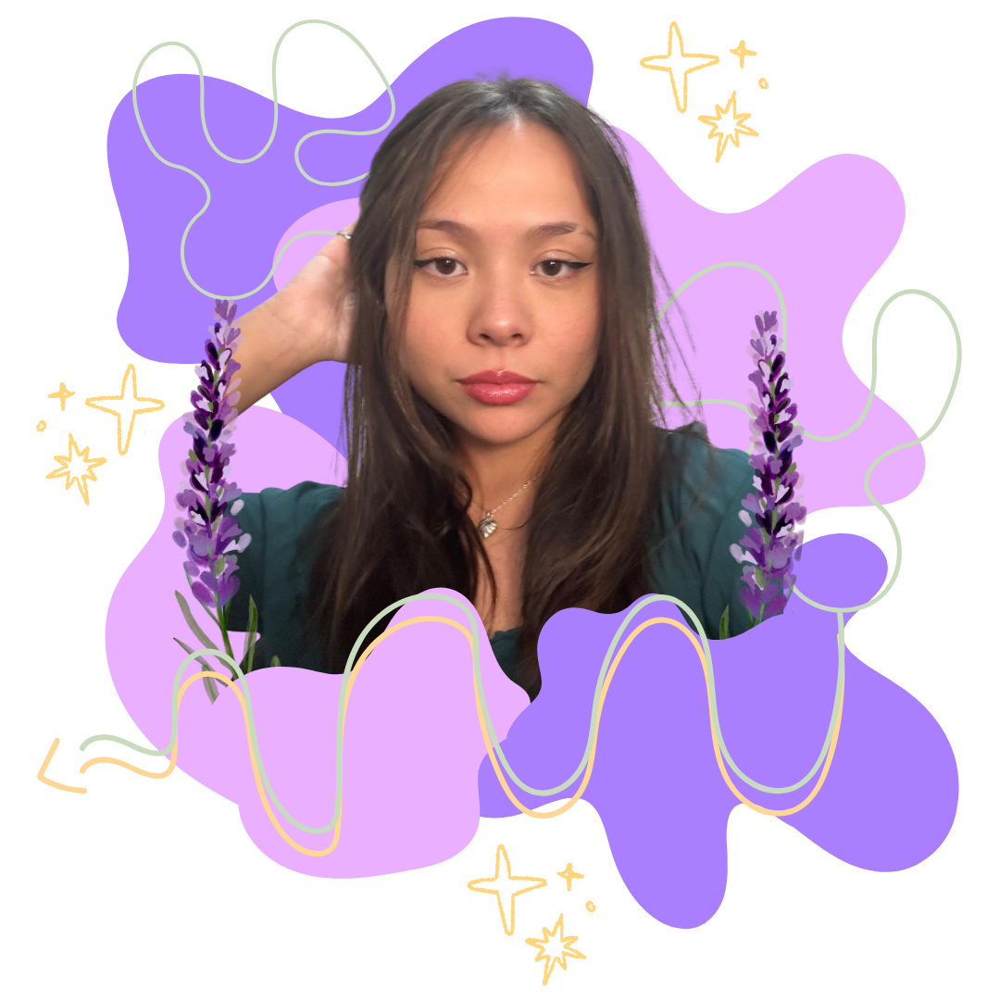

Oie! Eu sou a Raquel Massae.
Tenho 21 anos, sou formada em Técnico em Informática pelo IFSP e atualmente curso o último semestre do tecnólogo em Desenvolvimento de Software Multiplataforma na Fatec de Jacareí.
Sou estagiária na Embraer, atuo como líder de solução na área de Arquitetura e Desenvolvimento de Sistemas.
Ao longo do técnico e do tecnólogo, virei entusiasta de JavaScript, React, Python e Figma. Gosto tanto de construir a lógica por trás do produto quanto de pensar em como ele se apresenta para as pessoas.
Fora do código, fiz parte do Coral OSIJJA, sou formada em Música e estudei violino por muitos anos. Também amo usar meu tempo livre para pintar em aquarela.
Tecnologia e arte sempre andaram juntas na minha história, e é essa combinação entre desenvolvimento e design que me move :)
Áreas de interesse
- Design gráfico e UX/UI
- Desenvolvimento web
- JavaScript
- React
- Python
- Figma
